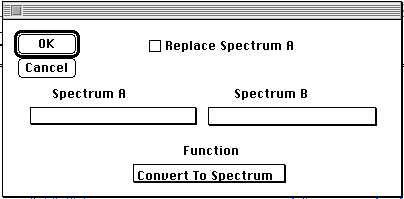
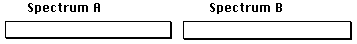

Distributed By: Virtual Labs
Spectrum Math
PATH...Graph Object:Spectrum:Math..

Check if you want the calculated spectrum
to replace Spectrum A.
Use to select the spectrums from the graph object
that need to be manipulated.
Author: J.ames T.
Stanley
 Desktop
Manual:Dialog Boxes
Desktop
Manual:Dialog Boxes
Distributed By: Virtual Labs
Last Updated:1/12/96 Sat, Apr 27, 1996